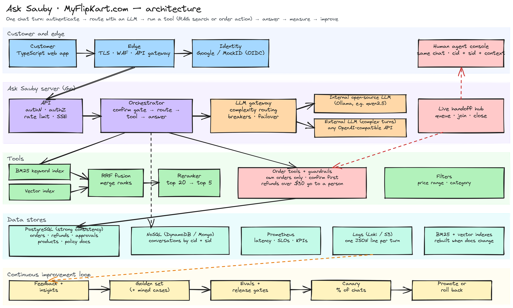

What happens when a customer asks a question
Ask Sauby is an educational support assistant for a fictional store. Pick a request and watch it travel through search, the LLM, guardrails, people and data stores.
SAsk Sauby
What we measure
Architecture

Source: architecture.excalidraw — open it at excalidraw.com to edit.